Setelah mempelajari perintah Debian, kita dapat mengatur IP Static sebagai bekal projek akhir.
berikut langkah-langkah konfigurasi IP Static:
1. Masuk ke akun Debian kemudian masuk sebagai super user
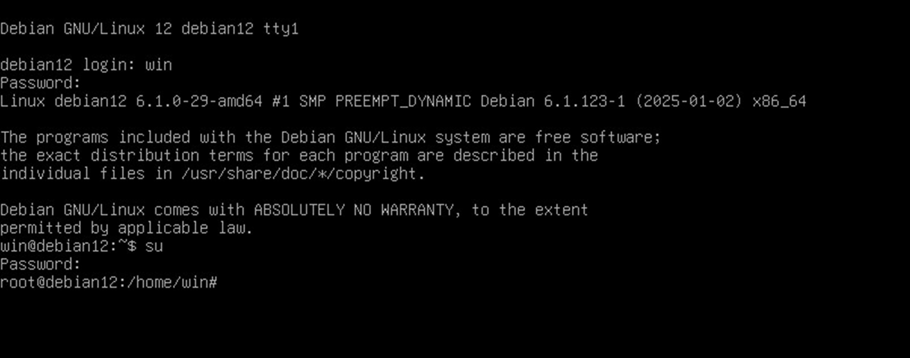
2. Setelah masuk sebagai super user, ketik nano /etc/network/interfaces
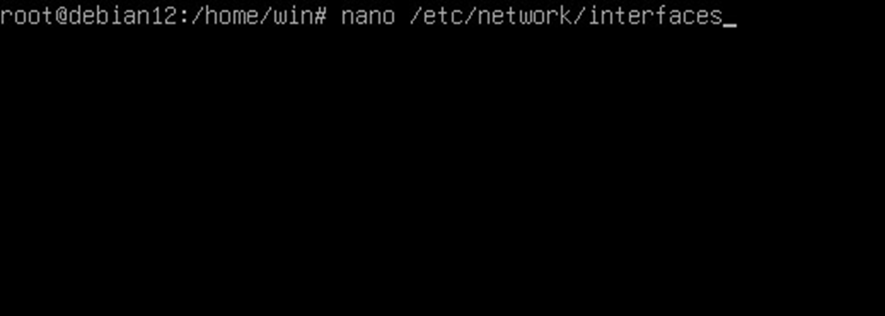
3. Setelahnya akan muncul tampilan seperti ini
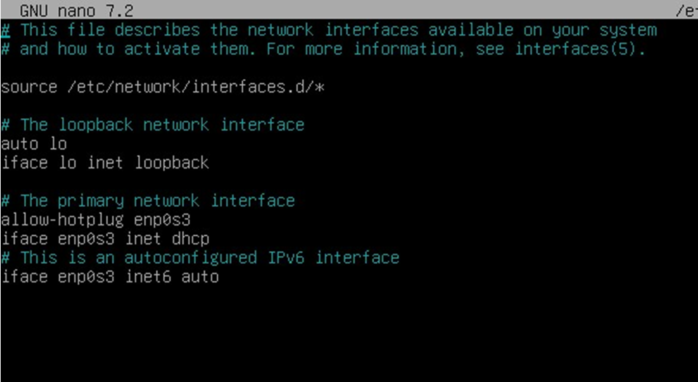
4. Kemudian ubah hingga menjadi seperti ini
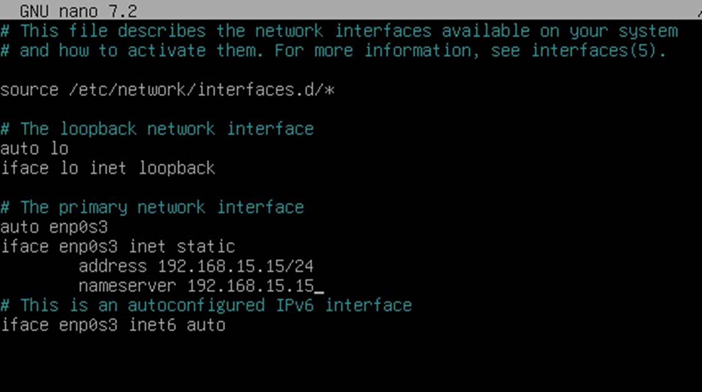
5. Kemudian gunakan perintah systemctl restart networking untuk me-restart jaringan
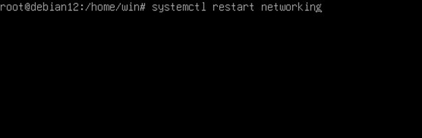
6. Setelahnya gunakan perintah systemctl status networking untuk mengecek status jaringan
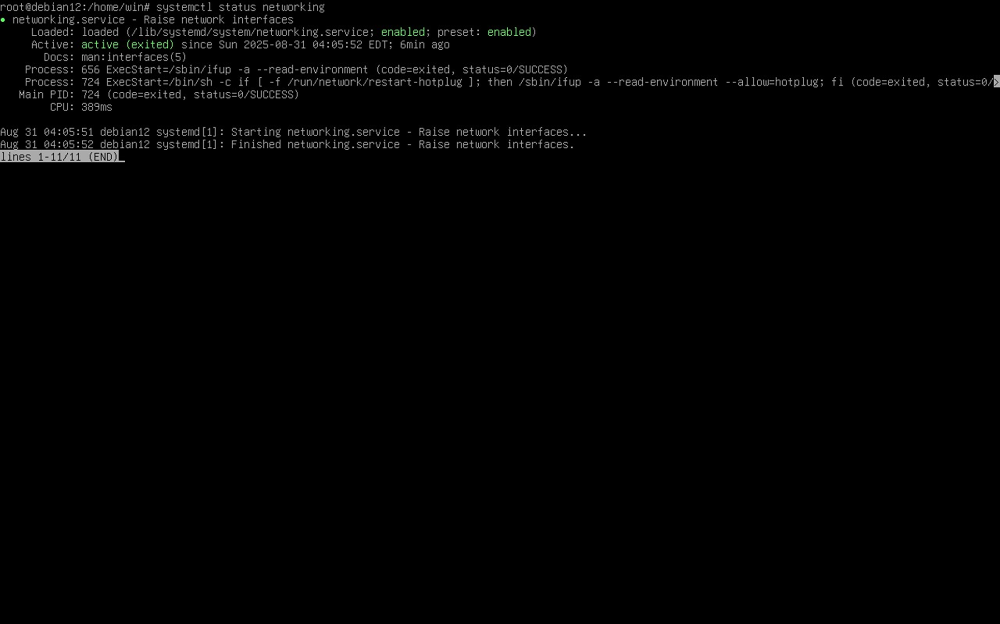
7. Kemudian gunakan juga perintah ip a untuk mengecek apakah IP sudah berganti
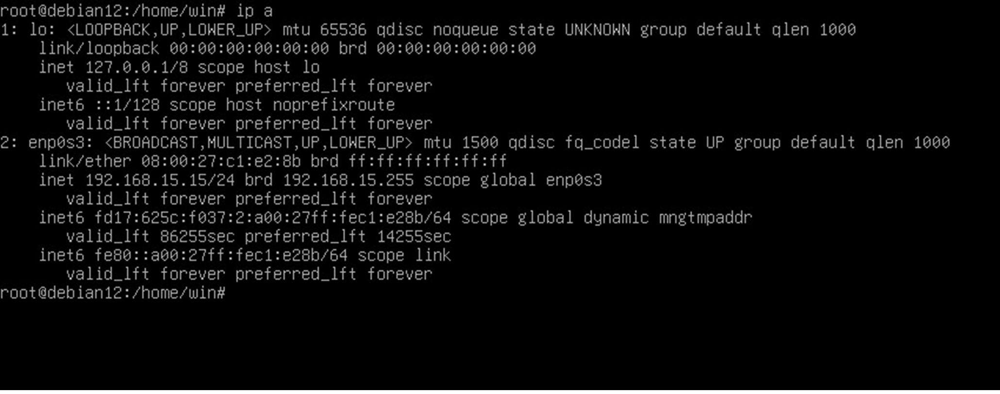
8. Pastikan pada pernyataan ini bertuliskan UP bukan DOWN ya
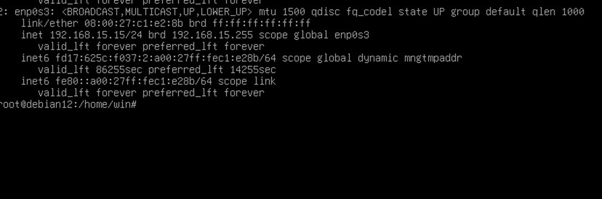
9. Cari aplikasi ini di perangkat
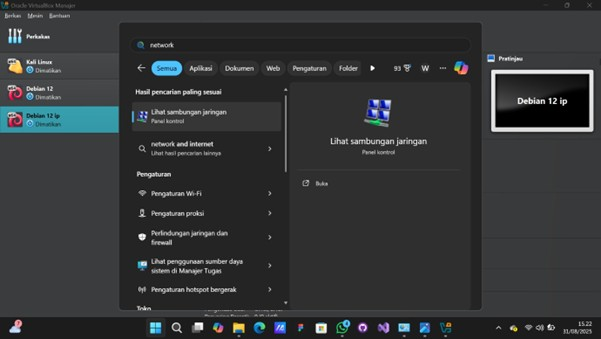
10. Kemudian klik kanan pada Ethernet dan pilih Properties
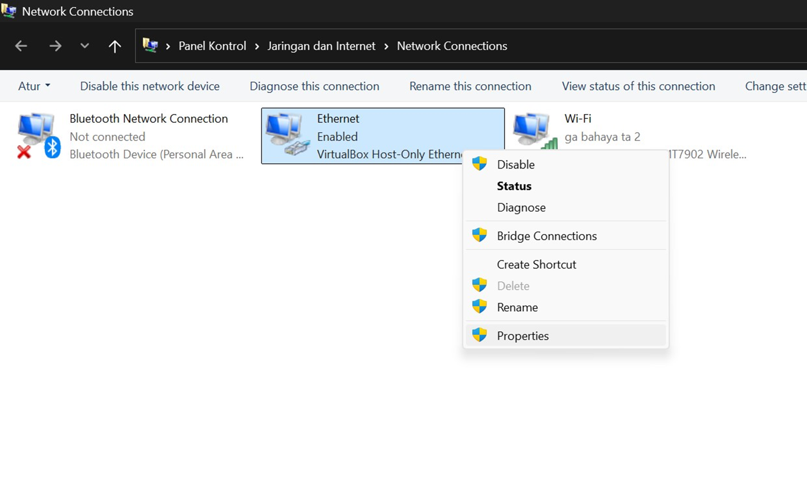
11. Pilih bagian ini kemudian klik dua kali
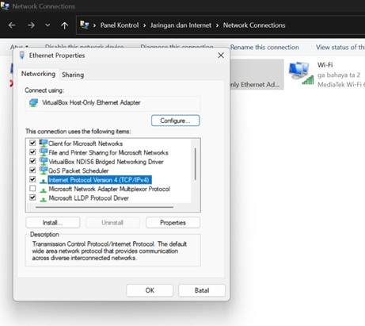
12. Kemudian isi kolom hingga sesuai dengan IP, di sini saya menggunakan IP saya
(IP address yang atas adalah punya perangkat)
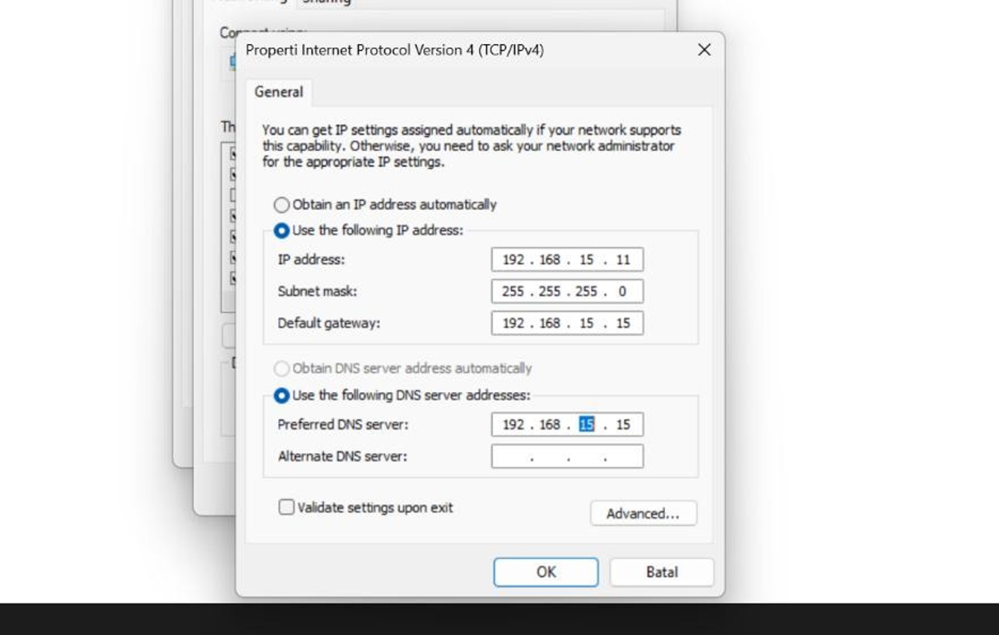
13. Kemudian atur adaptor Debian
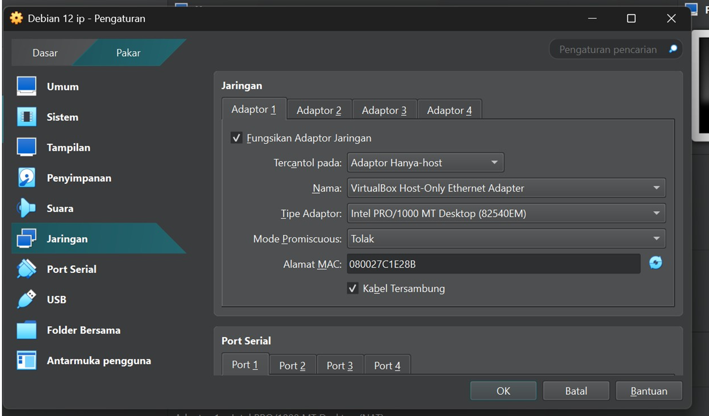
14. Buka Terminal atau CMD untuk melakukan ping ke Debian dengan memasukkan alamat IP-nya
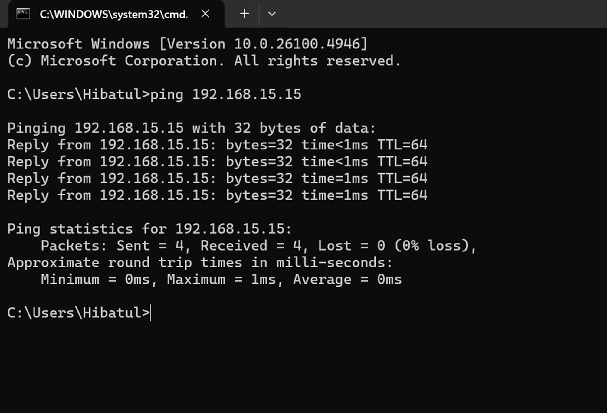
15. Pakai perintah ping juga di Debian untuk mengecek koneksi dengan perangkat kita dengan menulis IP-nya
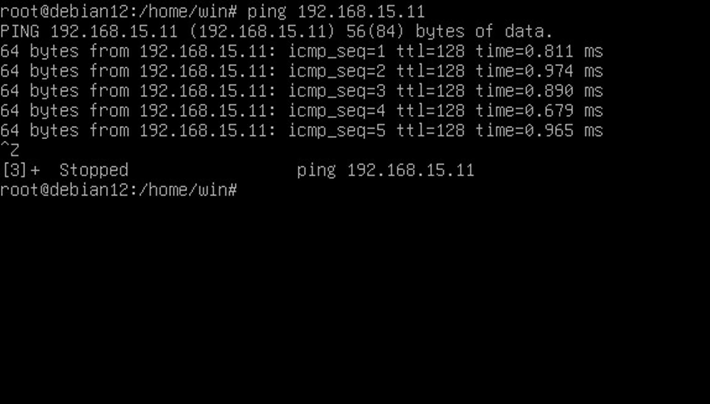